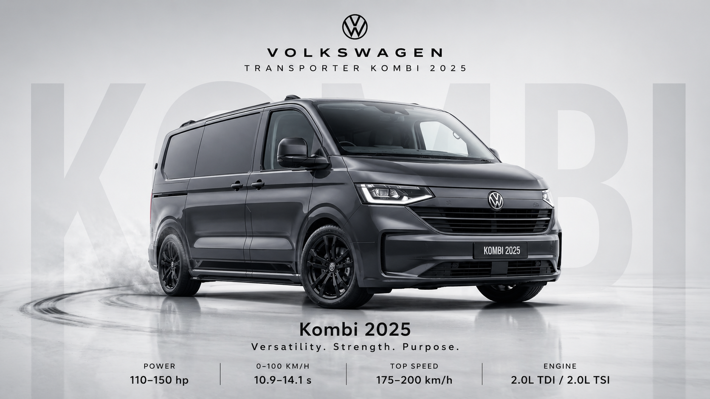
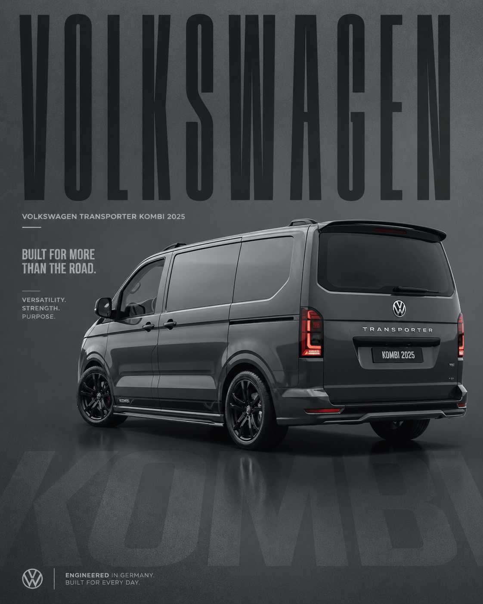

01
Production crew transport
Crew, cast, directors, agency teams, clients, and production guests moved calmly between schedule points.


Professional VW Kombi van transport for commercials, films, series, airport pickups, and production teams in Athens and across Greece.
◆ Production-ready in Athens
Production transport is about more than arriving at an address. It means reading the day, staying calm when call times move, knowing when to be visible and when to disappear, and keeping people moving between airports, hotels, studios, sets, and filming locations without adding noise to the production.
◆ Services
Crew, cast, directors, agency teams, clients, and production guests moved calmly between schedule points.
Transport support for commercials, series, films, branded content, documentaries, and corporate video days.
Athens airport arrivals for production teams, clients, directors, cast, and visiting crew.
Reliable hotel, studio, basecamp, and set transfers aligned with call times.
Flexible movement between filming locations when the day changes quickly.
Comfortable private group transport for up to 8 passengers when production needs extend beyond set.

◆ Volkswagen Kombi / up to 8 passengers
A clean, comfortable VW Kombi van for crew movement, client pickups, cast transport, hotel transfers, and location changes. Enough room for people, day bags, and light production needs without feeling like a generic transfer van.
◆ Why choose this service
◆ Contact / booking
Send the date, call time, pickup points, schedule, passengers, luggage or equipment notes, and any location movement planned for the day.